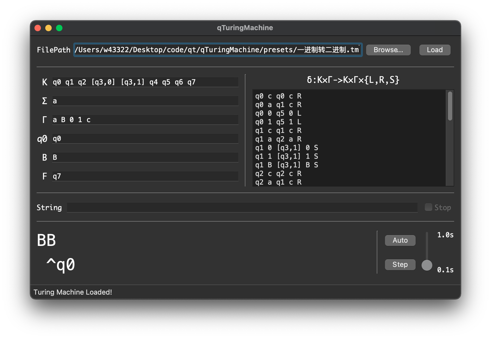

qTuringMachine
这是一个东北大学2020级计算机学院《计算理论》课的课设。
1.简介
本程序使用Qt/C++编写，可以跨平台编译，作者在Windows 10 x64、macOS Big Sur以及Arch Linux上都能正常编译。图灵机内部用stl的set和map实现，字符串用QString类储存。
本程序可以加载任意单带图灵机的预设，并针对所给定的字符串来模拟运行结果，支持逐步查看和自动运行。
本程序内置了5个图灵机预设，分别对应课件上“4.1 图灵机模型”中所给出的5个图灵机，它们分别是：
，接收的语言为
，接收的语言为
，用来计算自然数以2为底的对数
，用来计算两个自然数m、n的减法：
，用来把一进制自然数转换成二进制数
2.使用方法
打开软件后，点击“Browse...”按钮选择一个图灵机预设（后缀为""），之后点击“Load”按钮载入该图灵机。成功后状态应如下图。

载入图灵机后，在String后面的输入框中输入想要的字符串，字符串应该会在下面实时更新。
点击“Auto”按钮或者“Step”按钮来运行图灵机。在Auto状态下，可以用右边的滑块来控制运行速度，用上面的“Stop”按钮来停止自动运行。
在运行过程中：
如果遇到了不合法的字符串，下方状态栏会显示“Iteration Failed! String is not valid language.”；

如果已经到达了终止状态，下方状态栏会显示“Iteration Finished.”

如果成功进行状态转移，且尚未达到终止状态，下方状态栏会显示“Iteration Successful.”；